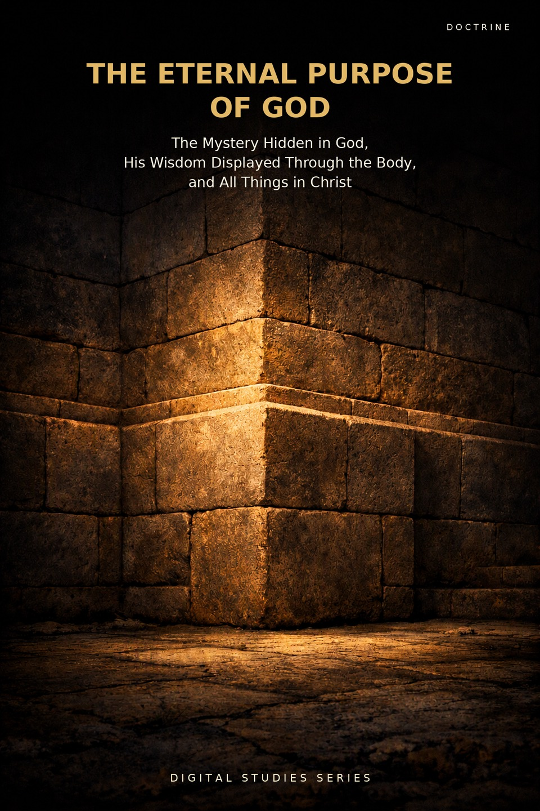
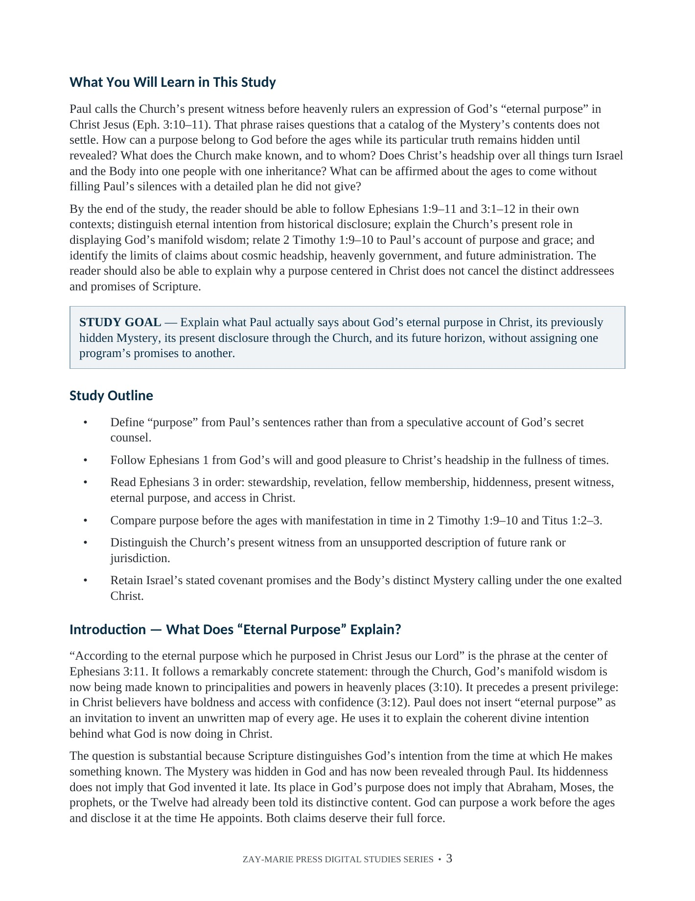

The Eternal Purpose of God
The Mystery Hidden in God, His Wisdom Displayed Through the Body, and All Things in Christ
What was purposed before the ages, and what is now made known?
Ephesians says that God purposed in Christ before the ages, kept the Mystery hidden in Himself, and now makes His manifold wisdom known through the Church. Study 57 follows the relationship between purpose, disclosure, present witness, and the fullness of times.
It reads Christ’s comprehensive headship alongside the distinct promises and recipients Scripture names. The study tests what Ephesians 3:10–11 actually says about the Church’s witness before heavenly authorities without adding an unstated command or governmental office.
Purpose Before the Ages, Wisdom Displayed Now
God’s prior purpose and its historical disclosure are related, but they answer different questions. Ephesians 1 describes His will in Christ and the fullness of times; Ephesians 3 says the Mystery was hidden in God and now revealed through Paul, with wisdom made known through the Church. This study traces those claims in their contexts and marks the limits of what they establish about the ages to come.
Study 6 explains the content and timing of the Mystery’s revelation. Study 5 surveys the Body’s heavenly calling, Study 30 examines its present seating with Christ, and Study 56 asks what inheritance passages grant. Study 57 joins these questions around Ephesians 3:10–11: why does the revealed Body now display God’s wisdom, and how does that present witness accord with His eternal purpose? It does not turn the Church’s witness into an unstated commission over heavenly powers or transfer Israel’s covenants to the Body.
How These Studies Relate
Study 57 asks how God’s purpose in Christ relates to the Mystery’s disclosure, the Church’s present witness, and the future fullness. The neighboring studies supply the narrower claims this synthesis must respect.
Digital Studies
Study 6 — The Mystery Revealed Through Paul Establish what was hidden and disclosed through Paul; then use Study 57 to ask what Ephesians 3:10–11 says that disclosure now displays.
Study 5 — The Heavenly Calling Survey the Body’s blessings, identity, and hope before asking how this calling fits God’s larger purpose in Christ.
Study 30 — Seated With Christ in Heavenly Places Test what Ephesians 2:6 establishes about present position before drawing conclusions about rule or jurisdiction from Ephesians 3:10.
Study 56 — Inheritance Identify what inheritance texts actually promise before reading Ephesians 1:11 and Christ’s headship as a transfer of Israel’s named land grant.
Commentary Series
Covenantal Commentary Series, Volume 4 — The Eternal Purpose of God Argues God’s one purpose in Christ, the two callings that serve it and where they meet; Study 57 traces the purpose, the Mystery and the display of wisdom in Ephesians, reporting each passage without arguing beyond the text.
Prophecy & Mystery Commentary Series, Volume 2 — The Mystery Program Argues the secret Paul names was hid in God and revealed through him; Study 57 traces the purpose before the ages and the Mystery disclosed through Paul, recording what the text says without arguing a position beyond it.
Go deeper: the Commentary Collection argues this question across the whole Bible in The Eternal Purpose of God (Covenantal Commentary Series, Volume 4).
Follow the Claims in Ephesians
Purpose and Disclosure
Trace the time markers “before,” “hid,” “now” and “ages to come” across Ephesians 1–3 to separate what God purposed from what Paul says was hidden and revealed.
The Fullness of Times
Read Ephesians 1:9–11 and 1:20–23 clause by clause, noting the scope of “all things” and each recipient the text names.
The Mystery Hidden in God
Follow Ephesians 3:1–9 in order, noting Paul’s stewardship, the content stated in verse 6, and the phrase “hid in God.”
Wisdom Made Known
Read Ephesians 3:10–11 grammatically, marking the agent, means, audience, sphere and time.
Christ’s Headship
Test headship claims against the passages that name distinct addressees, promises and commissions.
Limits of the Text
Sort claims into explicit teaching, textual synthesis, responsible inference and unsupported specification.
Read Purpose, Revelation, and Witness Together
Ephesians 1:3–14
Mark God’s purposed will, the fullness of times, and the hearing, believing and sealing.
Ephesians 1:15–23
Note the scope of Christ’s exaltation and what is said of the Church.
Ephesians 2:1–10
Compare present seating in 2:6 with the future display stated in 2:7.
Ephesians 3:1–12
Trace the stewardship, the content of verse 6, “hid in God,” and the agent and audience of verse 10.
2 Timothy 1:8–12
Contrast what was given before the ages with what is now made manifest.
Titus 1:1–3
Note the promise before the ages and its manifestation in due times.
Colossians 1:24–29
Mark the concealment, the manifestation, and the recipients named.
Romans 11:25–29
Mark the time marker, the named covenant recipients, and the claim about God’s gifts and calling.
The Question Behind the Passage
Intention and disclosure are not the same event.
God’s purpose was prior; the Mystery was hidden until its appointed revelation. The study reads both statements without making prior intention equal prior public announcement.
Preview the Study Before You Purchase
Click any page to enlarge it for reading.



What You Will Learn
See the study’s goal, outline, and the question it sets out to answer.

A Focused Study of Eternal Purpose
20-Page Digital PDF
Approved cover and 19-page interior with a numbered table of contents.
Nine Teaching Sections
Move from prior purpose and disclosure to wisdom, headship, and future claims.
Key Distinctions Table
Compare what the texts establish with common conclusions they do not require.
Interpretive Controls
Keep audience, timing, stated agent, and the limits of each claim in view.
Scripture-Tracing Exercise
Record what was purposed, when it was disclosed, and what remains unstated.
Teaching Outline and Further Study
Use guided readings to test the argument against related studies.
The Eternal Purpose of God
20-page digital PDF · For personal use